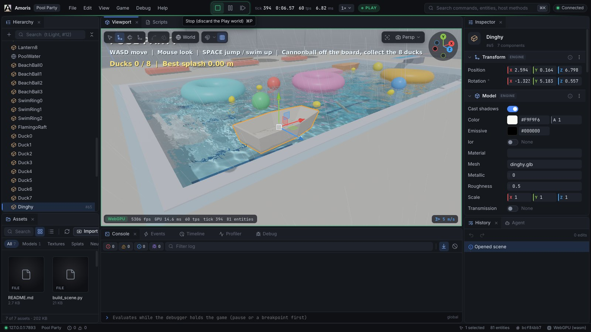
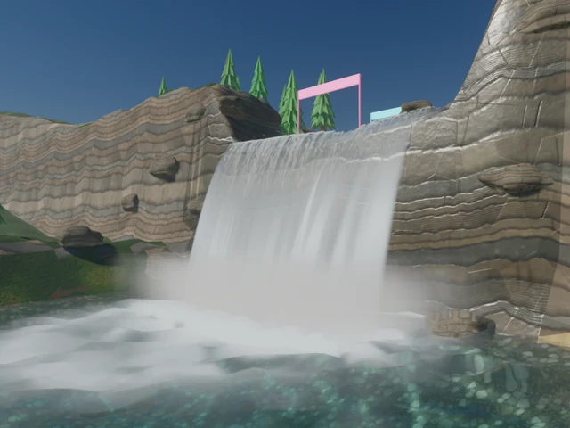
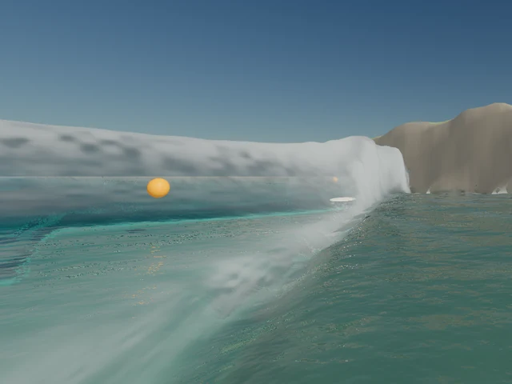
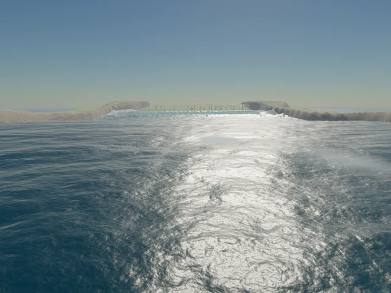
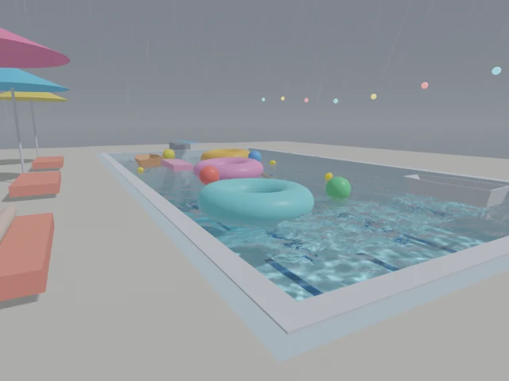
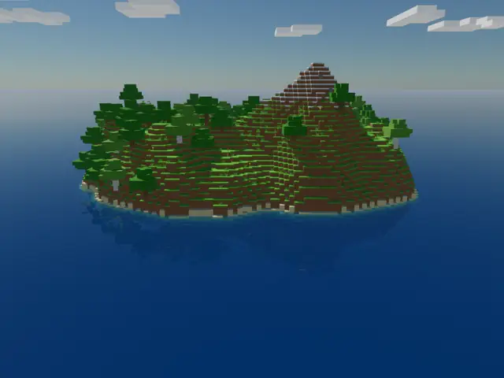
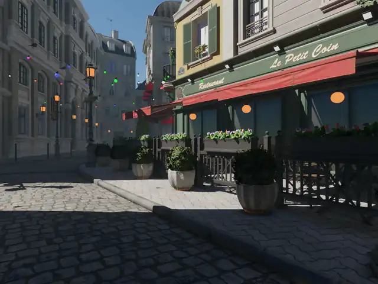

Amoris
An agent-native 3D engine: a Rust core, TypeScript game systems, and one command catalog for the editor, the CLI and agents.

The web editor / playing Pool party against the real Rust host
Editor guide →
Rust + TypeScriptstateless systems · state in components
Metal · Vulkan · D3D12 · WebGPUone renderer · WGSL shaders
GPU waterthe same bits on every device
CLI · editor · MCPone discoverable command catalog
Work in progress · engine captures
Scenes.

River falls GPU water · falling sheet

Surf beach breaking waves

Wind sea FFT cascades to the horizon

Pool party floating bodies · rain

Blockcraft voxels · web export

Bistro, real-time baked probes · ray-traced shadows
Apple M5 / Metal. Capture details in the media manifest; asset licences in the credits.
Agent experiments · 5 October 2026
Play and develop through the API.
Every trial →
4/4Cargo, played by DeepSeek Flash
Through a player gateway; the native replay reproduces every action.
18/18Patches passed strict grading
Six frozen tasks, three trials each, through native MCP tools.
63Behavioral assertions
Types, determinism, fork, replay and reload checked natively.
51 → 16 msDepth prepass, 1.6M cubes
RTX 5060 Laptop, Direct3D 12, 1440p, 4× MSAA. Provisional.
2,700Metal frames accounted for
Every GPU frame on its own CPU timeline, none dropped.
97MTriangles, 1,024 helmets
82.43 ms render-and-wait at 1080p on Apple M5, 5 October.
Start with a running sample
Open a sample. Learn the API.